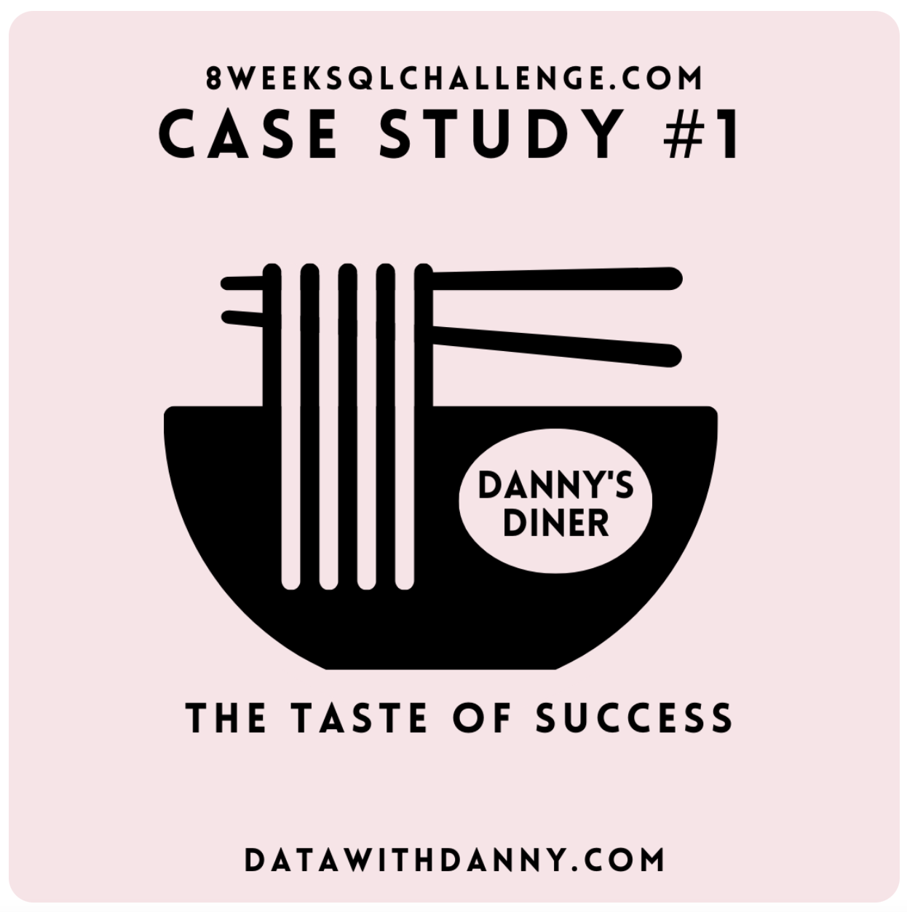
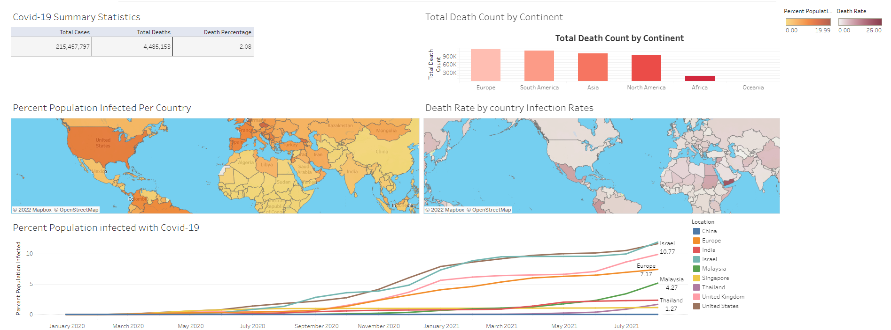
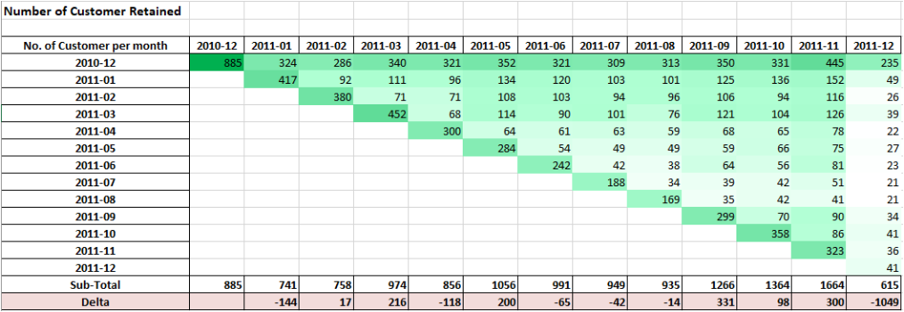

Education: Nanyang Technological University: Economics (Bachelor)
Currently at: TikTok Pte Ltd Data Analyst
Ex-Citibank Credit Risk Analyst | Ex-Shopee (SG) Business Intelligence
Skills: Python, SQL, Web Scraping, Dashboard, Visualizations

This project consists of 8 Case Studies by Danny Ma and data analysis and exploration was conducted to answer business related questions and metrics.
This project consists of scraping 10 Companies Financial information on Yahoo Finance website using BeautifulSoup and Selenium. The purpose is study their historical records to make stock purchase decisons.

This project was completed in August 2021, when many countries suffered high infections of Covid-19 due to reopening of the economy.

Cohort Analysis is one of the ways to monitor and segment groups of customers. In this project, we look at the retention of the customers.